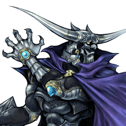
Final Fantasy
Garland
Défenseur au sol qui convertit chaque touche en bravery et en EX
Position dans la méta
Tier B 24ᵉ sur 30 — tier list tournoi 2017 de dissidia.wiki (moitié valeurs de matchups, moitié avis de joueurs experts).
Les sources le décrivent comme historiquement considéré low tier, mais sa représentation depuis 2020 plaide pour une position plus haute.
Vue d'ensemble
Garland est un personnage défensif de courte et moyenne portée. Ses forces tiennent à des braveries excellentes en whiff punish et à sa capacité à accumuler EX et bravery à chaque touche. Au sol, il poke avec Deathblow pour remplir sa jauge d'assist en sécurité et menacer toute approche aérienne ; Lance Charge et ses HP cassent les guards et attrapent les dodges au sol, et la recovery courte de Deathblow lui permet d'ajuster le timing de ses attaques, rendant sa défense au sol difficile à lire.
Son combat aérien repose sur le positionnement vertical : Twist Drill anti-air, Bardiche descend avec un fort potentiel de dégâts, Cyclone verrouille une zone et Chain Cast sert de whiff punisher vertical évasif. Côté stats, ATK et DEF de base sont au-dessus de la moyenne, et son arme exclusive de niveau 100, la Gigant Axe, est la meilleure de sa catégorie pour les builds EX et dégâts.
Le reste est plus limité : vitesse de déplacement sous la moyenne, aucun HP link solo praticable et air dodges flottants. Esquiver est risqué pour Garland, ses options d'auto-défense post-dodge étant lentes et très engageantes. Son offense aérienne est bridée par des braveries aux angles spécifiques et aux angles morts notables, en particulier droit devant lui ; les personnages à chute rapide après air dodge et les command blocks le gênent aussi.
Longtemps considéré low tier, Garland présente depuis 2020 des arguments pour un meilleur classement. Sa défense au sol neutralise beaucoup d'approches aériennes rapprochées, et la plupart de ses touches rapportent énormément de bravery et d'EX. Sa condition de victoire : jauge EX pleine et gros stock de bravery, pour conclure un match sur un seul combo EX Revenge à 5 Bardiche. Sa stratégie à long terme est forte, mais elle exige toujours plusieurs touches et des ressources pour garantir la victoire.
Forces
- Whiff punish : plusieurs braveries lui permettent de réagir sous des angles variés.
- Dégâts de bravery : Bardiche, l'assist Kuja et les combos solo Chain Cast peuvent bravery break très vite.
- Neutral au sol sûr : Deathblow lui laisse dicter le rythme avec moins de risque que la plupart des personnages.
- Économie de jauge EX : il génère et collecte l'EX efficacement via ses combos, et peut tuer plus tôt que quiconque en EX Revenge grâce à Bardiche et au stack de bravery.
- Disjoints capables de traverser les projectiles.
- Bonne présence sol-sol contre les personnages de corps à corps.
Faiblesses
- Mobilité sous la moyenne, sur tous les plans.
- Vulnérabilité post-dodge : ses air dodges l'exposent, et Chain Cast ne protège pas par invincibilité.
- Punish de dodge aérien limité : HP, Twist Drill et Bardiche exigent des angles précis ; il peine contre les fast fallers (Kain) et les back air dodges, d'où un momentum offensif difficile à créer.
- Neutral et mixups aériens imparfaits : difficultés contre le block en l'air, et ses HP aériens offrent peu d'utilité contre la plupart des personnages.
- Vulnérable au duo vitesse + longue portée : braveries aériennes plus lentes en moyenne, donc interruptions faciles en face-à-face ; son anti-zoning se résume au dash et aux builds Bravery Boost on Dodge.
Stats & vitesses
| Nom | Garland (ガーランド) |
|---|---|
| Jeu d'origine | Final Fantasy |
| ATK de base (LV100) | 111 (High) |
| DEF de base (LV100) | 112 (High) |
| Vitesse de course | 10.5 (Very Slow) |
| Vitesse de dash | 81 (Below Average) |
| Vitesse de chute | 77 (Above Average) |
| Chute après esquive | 41 (Below Average) |
| BRV la plus rapide | 13F (Deathblow, Highbringer high ver.) |
| HP la plus rapide | 39F (Earthquake) |
| HP en 1 coup | Yes (Cyclone, Blaze) |
| HP links | Yes (Combos only) |
| Command block | No |
| Armes | Axes, Greatswords, Katanas, Spears |
| Armures | Gauntlets, Heavy Armor, Helms,Light Armor, Shields |
| Armes exclusives | Ogrekiller, Viking Axe, Gigant Axe |
| Camp | Chaos |
| Doubleur (JP) | Kenji Utsumi |
| Doubleur (ENG) | Christopher Sabat |
Point or : ce personnage · petits points : le reste du cast · trait violet : moyenne. Valeurs du wiki, plus bas = plus rapide ; le rang à droite se lit directement (1ᵉʳ = le plus rapide).
Coups
Barre plus courte = coup plus rapide. Startup en frames (60 i/s, données dissidia.wiki), priorité indiquée après la valeur. Les coups marqués ★ sont les plus rapides du kit — ce sont en général vos meilleurs outils de punish et de pression.
Braveries
Au sol
Round Edge Melee Low Melee Mid (2nd hit)
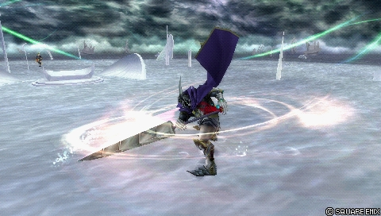
Trois balayages avec deux finishers au choix (Circle avant le troisième coup pour Wall Rush, après pour Chase), déplacement libre pendant les deux premiers. Attaque très engageante réservée aux block staggers et aux surprises : startup long, aucune esquive possible avant la fin des trois coups. Belle récompense sur hit grâce aux follow-ups Deathblow (bravery, EX, jauge d'assist). En lock off, Garland peut se déplacer librement au sol pendant le move.
Short Melee Low Melee Mid (2nd hit)
| Dégâts de base | 45 (7, 8, 30) |
|---|---|
| Startup | 23F |
| Type | Physical |
| Priorité | Melee Low Melee Mid (2nd hit) |
| EX Force | 30 |
| Effets | Wall Rush |
| Cancels | Dodge |
| CP (maîtrisé) | 30 (15) |
Long Melee Low, Melee Mid (2nd hit) Melee High (3rd hit)
| Dégâts de base | 45 (7, 8, 9, 2, 2, 2, 15) |
|---|---|
| Startup | 23F |
| Type | Physical |
| Priorité | Melee Low, Melee Mid (2nd hit) Melee High (3rd hit) |
| EX Force | 90 |
| Effets | Chase |
| Cancels | Dodge |
| CP (maîtrisé) | 30 (15) |
Lance Charge Melee Mid
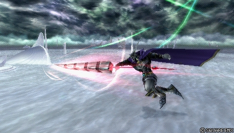
Move de base : gap closer de mi-distance et whiff punisher en ligne droite, rapide, mid priority, combos d'assist sur hit. Stagger les blocks normaux et peut enchaîner un Wall Rush au sol même bloqué, ce qui ouvre les gros combos d'assist Kuja. Très linéaire cependant : perd contre les déplacements latéraux/verticaux rapides et les priorités supérieures, laisse Garland en l'air sur miss, et sert peu dans les matchups aériens comme Sephiroth.
| Dégâts de base | 30 (2 x 5, 5, 15) |
|---|---|
| Startup | 31F |
| Type | Physical |
| Priorité | Melee Mid |
| EX Force | 30 |
| Effets | Wall Rush |
| Cancels | Dodge |
| CP (maîtrisé) | 30 (15) |
Deathblow Melee Low
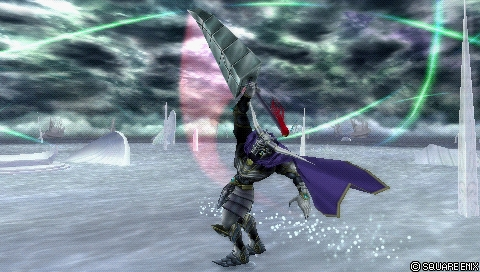
L'une de ses meilleures braveries : poke sûr, anti-air et démarreur de combo. Frames actives longues, fort tracking, recovery rapide — un move sûr sans même devoir dodge, chose très rare dans ce jeu. Sur hit, combo en saut > Twist Drill (150 EX au total) et assist. Indispensable au corps à corps au sol, mais il perd contre les priorités supérieures et les blocks bien placés, et ne conteste pas le halo camping.
| Dégâts de base | 15 |
|---|---|
| Startup | 13F |
| Type | Physical |
| Priorité | Melee Low |
| EX Force | 60 |
| Cancels | Dodge, Block, Attack, Movement |
| CP (maîtrisé) | 30 (15) |
Highbringer Melee Low
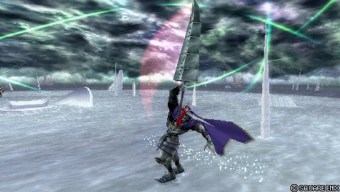
Poke, punisseur post-block et démarreur de combo assist, idéal comme bravery au sol secondaire pour apprendre le personnage. Version basse (Circle deux fois) : finisher Chase et 90 EX ; version haute (Circle maintenu puis tapé) : Wall Rush en l'air. Rapide et plus accessible que Deathblow pour les combos d'assist, mais surclassé à haut niveau : recovery bien plus longue, pas de suivi Twist Drill constant, et la version haute laisse Garland en l'air sur miss. Le premier hit de la version haute se dodge cancel tôt sur hit, pas celui de la version basse.
Low Melee Low
| Dégâts de base | 24 (5, 19) |
|---|---|
| Startup | 17F |
| Type | Physical |
| Priorité | Melee Low |
| EX Force | 90 |
| Effets | Chase |
| Cancels | Dodge |
| CP (maîtrisé) | 30 (15) |
High Melee Low
| Dégâts de base | 24 (5, 2, 2, 15) |
|---|---|
| Startup | 13F |
| Type | Physical |
| Priorité | Melee Low |
| EX Force | 30 |
| Effets | Wall Rush |
| Cancels | Dodge |
| CP (maîtrisé) | 30 (15) |
Thundaga (ground) Ranged Low
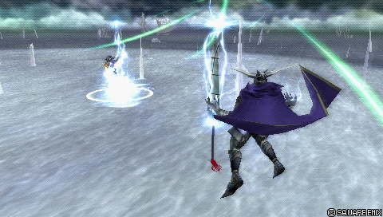
Trois éclairs apparaissant sur l'adversaire en séquence : poke de longue portée servant surtout à interrompre. Traverse les objets solides et les projectiles persistants ; dégâts faibles, combos seulement au mur (où les éclairs s'enchaînent et ouvrent sur Flare, Chain Cast, voire un assist bravery aérien). Recovery assez courte pour un move de ce type, mais peu utilisé en compétitif.
| Dégâts de base | each (10) |
|---|---|
| Startup | 51F |
| Type | Magical |
| Priorité | Ranged Low |
| EX Force | 0 |
| Cancels | Dodge, Block, Attack |
| CP (maîtrisé) | 30 (15) |
En l’air
Twin Swords Melee Low
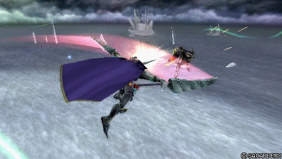
Sa bravery aérienne d'avancée dédiée, dont le tracking dans toutes les directions en fait un contre plus fiable après block. Souffre du dilemme des 3 slots face à Twist Drill, Chain Cast et Bardiche : pas toujours non réactable, animation longue tout en basse priorité, tracking bref, et le Wall Rush obligatoire pour les combos d'assist penche le ratio risque/récompense contre Garland. Risqué en neutral.
| Dégâts de base | 30 (7, 8, 15) |
|---|---|
| Startup | 21F |
| Type | Physical |
| Priorité | Melee Low |
| EX Force | 30 |
| Effets | Wall Rush |
| Cancels | Dodge |
| CP (maîtrisé) | 30 (15) |
Chain Cast Melee Low
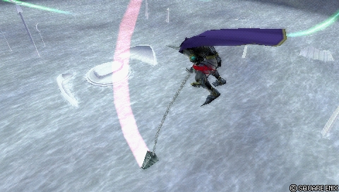
Garland se repositionne au-dessus de l'adversaire pour deux frappes verticales : démarreur de combo aérien, whiff punisher air-to-ground et sa principale option défensive post-dodge en l'air (non invincible, mais le déplacement esquive les punish lents). Sur hit, dodge cancel puis Twist Drill pour 180 EX (près de 20 % d'une barre). Lent et télégraphé, donc facile à bloquer ou esquiver ; peut toucher derrière le block adverse dans des conditions encore mal cernées, et sa hitbox présente des trous le long de la chaîne.
| Dégâts de base | 15 (7, 8) |
|---|---|
| Startup | 45F |
| Type | Physical |
| Priorité | Melee Low |
| EX Force | 90 |
| Effets | Chase |
| Cancels | Dodge |
| CP (maîtrisé) | 30 (15) |
Bardiche Melee Low
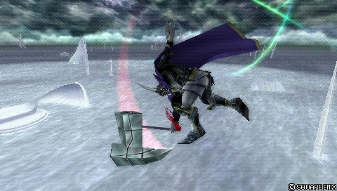
Son coup de hache iconique : rapide, recovery de whiff correcte, dégâts tristement célèbres. Remplit la jauge d'assist sur whiff, punit les attaques longues sous Garland, et surtout alimente les combos d'assist Wall Rush au sol et l'EX Revenge — ses dégâts de base élevés en font l'un des meilleurs utilisateurs des bonus de bravery sur Wall Rush (Booster). Hors combo, la récompense est maigre : 0 EX, fenêtre de confirm d'assist courte, tracking uniquement vers le bas, petite hitbox, move bruyant et télégraphé. Les dégâts compensent largement.
| Dégâts de base | 30 |
|---|---|
| Startup | 23F |
| Type | Physical |
| Priorité | Melee Low |
| EX Force | 0 |
| Effets | Wall Rush |
| Cancels | Dodge |
| CP (maîtrisé) | 30 (15) |
Twist Drill Melee Low
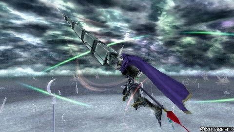
Autre pilier : anti-air rapide au bon potentiel de combo, dégâts et 90 EX. Il track surtout vers le haut, sert de whiff punisher ou de poke occasionnel, et sa portée connecte après Deathblow pour 180 EX. Hit stun énorme : l'un des rares moves du jeu offrant un empty chase sûr n'importe où, parfait pour les combos d'assist et la collecte d'EX Force. Hitbox disjointe qui perce les projectiles et pièges (Knight's Lance chargé d'Ultimecia), premier segment dodge cancellable assez tôt pour contester les Dreary Cells de The Emperor, et il peut toucher derrière le block par en dessous. Recovery de whiff punissable à la réaction et angle mort au-dessus de la tête.
| Dégâts de base | 30 (4 x 2, 8, 14) |
|---|---|
| Startup | 21F |
| Type | Physical |
| Priorité | Melee Low |
| EX Force | 90 |
| Effets | Chase |
| Cancels | Dodge |
| CP (maîtrisé) | 30 (15) |
Thundaga (midair) Ranged Low
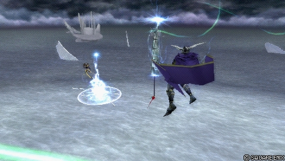
Identique à la version sol, mais utilisable partout en l'air. Option valable contre les mages et les personnages peu mobiles, principalement pour interrompre.
| Dégâts de base | each (10) |
|---|---|
| Startup | 51F |
| Type | Magical |
| Priorité | Ranged Low |
| EX Force | 0 |
| Cancels | Dodge, Block, Attack |
| CP (maîtrisé) | 30 (15) |
Attaques HP
Au sol
Earthquake Melee High (axe) Unblockable (rocks)
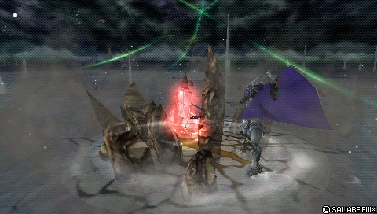
Bon mixup contre les adversaires agressifs au sol : bon tracking, fort knockback, et les rochers unblockables ignorent totalement l'Assist Change LV2. Anti-air les dodges au sol vers l'avant, et les rochers indépendants permettent de clasher avec les attaques Melee High (Rolling Blaze de Tifa, Revolver Drive de Squall) et de les punir, les trades tournant souvent en faveur de Garland. Difficile à punir sans attaques de mi-distance ou assist, mais reste vulnérable aux attaques aériennes ; le dodge ou l'assist pour couvrir la recovery coûte cher.
| Dégâts de base | 18 (8, 2 x 5) |
|---|---|
| Startup | 39F |
| Type | Physical (axe) Magical (rocks) |
| Priorité | Melee High (axe) Unblockable (rocks) |
| EX Force | 36 |
| Effets | Wall Rush |
| Cancels | Dodge |
| CP (maîtrisé) | 30 (15) |
Blaze (ground) Ranged High
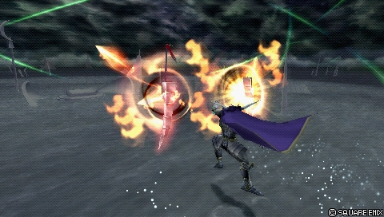
Boules de feu à tête chercheuse, version peu utilisée car son kit au sol est déjà relativement complet. Mauvaise deadzone devant Garland ; chaque boule peut infliger de la meter depletion sur hit — traits partagés avec la version aérienne, bien plus jouée.
| Startup | 59F |
|---|---|
| Priorité | Ranged High |
| EX Force | each (9) |
| Cancels | Dodge |
| CP (maîtrisé) | 30 (15) |
Tsunami Melee High
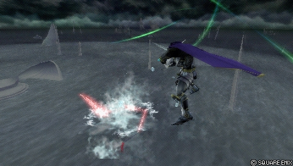
Option high risk / high reward à tracking contre les dodges au sol, et option défensive post-dodge grâce au mouvement vertical rapide du startup. Attrape les ground dodges avec constance et ouvre les combos d'assist, garantie après un stagger sur blodge. Contre un adversaire sans command block, Tsunami suivie d'un assist peut créer un checkmate. Sur miss, Garland reste vulnérable plusieurs secondes : l'assist est nécessaire pour couvrir.
| Dégâts de base | 12 (2 x 6) |
|---|---|
| Startup | 45F |
| Type | Physical |
| Priorité | Melee High |
| EX Force | 96 |
| Cancels | Dodge |
| CP (maîtrisé) | 30 (15) |
En l’air
Blaze (midair) Ranged High
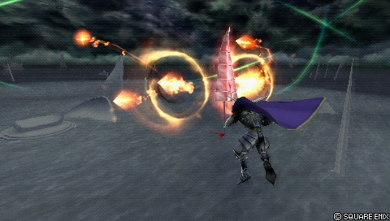
Outil de harcèlement longue portée secondaire, souvent combiné à Cyclone pour zoner en sécurité. Les projectiles convergent vers un point d'impact unique : présence à l'écran réduite, mais chaque boule peut toucher et déclencher la meter depletion (Battle Hammer et similaires). Aucune protection autour de Garland après le tir : sans Cyclone ou assist, gare aux trades défavorables. Hit rate faible à haut niveau mais risque faible utilisé avec parcimonie ; avec Auto Assist Lock On adverse, les projectiles se dispersent si l'adversaire s'échappe d'un combo d'assist.
| Startup | 59F |
|---|---|
| Priorité | Ranged High |
| EX Force | each (9) |
| Cancels | Dodge |
| CP (maîtrisé) | 30 (15) |
Cyclone Ranged High
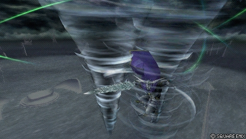
Outil défensif passif, extension de combo d'assist ou finisher plus sûr après assist. Bonne récompense sur hit (EX, hit stun, combos dans les assists, voire suivi de Garland lui-même sur hit tardif) ; rôle clé dans l'optimisation EX des combos aériens, au plafond et après EX Revenge. Deux projectiles Ranged High persistants qui ne couvrent pas tous les angles : les disjoints (Sudden Cruelty de Sephiroth, Seal Evil d'Aerith) et les Melee High avançants (Braver de Cloud, Rough Divide de Squall) passent au travers. Barrière fiable contre les personnages dépourvus de ces outils.
| Startup | 51F |
|---|---|
| Priorité | Ranged High |
| EX Force | each (60) |
| Effets | Absorb |
| Cancels | Dodge |
| CP (maîtrisé) | 30 (15) |
Flare Melee High
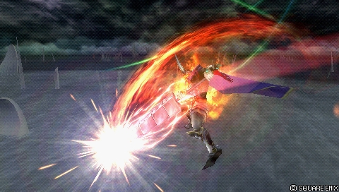
Son HP principal après un block et en fin de combo d'assist. Track l'adversaire (mais tourne mal juste avant d'avancer), fort potentiel de Wall Rush qui ajoute des dégâts constants après bravery break. Frames actives très brèves : inefficace contre les blocks précoces et les dodges aériens avec Evasion Boost ; grosse recovery. Sur contact, le second coup HP sort même si l'adversaire s'échappe en Assist Change LV1 ou sur clash avec une mêlée de priorité inférieure. Son seul HP aérien fiable en contre de block.
| Dégâts de base | 15 |
|---|---|
| Startup | 47F |
| Type | Physical |
| Priorité | Melee High |
| EX Force | 30 |
| Effets | Wall Rush |
| Cancels | Dodge |
| CP (maîtrisé) | 30 (15) |
EX Mode: Class Change! & EX Burst
EX Mode « Class Change! » — effets : Regen, Critical Boost et Indomitable Resolve. Un EX Mode classiquement fort grâce à l'output de dégâts de Garland ; la menace de ses combos EX Revenge dévastateurs le complète bien, l'activation déplétant en outre la jauge d'assist adverse. Peu de bonus uniques, mais comme Garland remplit sa jauge EX efficacement en combo, il obtient plus d'occasions de conclure le match avec.
Indomitable Resolve est un rare cas de super armor dans Dissidia 012 : pendant une animation d'attaque, Garland ne bronche devant aucune attaque n'infligeant pas de dégâts HP. Utile en attaque surprise et en dépannage contre les personnages à HP links — mais l'EX Mode ne change pas les propriétés de ses attaques : il peut toujours être bloqué.
EX Burst : Soul of Chaos se remplit en martelant Circle. Ce n'est pas le plus fort EX Burst du jeu, mais il est bien au-dessus de la moyenne en puissance grâce à la haute ATK de base de Garland, à de bons hits initiaux et au stack de bravery avec une jauge EX pleine.
Plan de jeu & techniques avancées
La partie se gagne au sol : Deathblow définit le rythme — poke sûr sans dodge obligatoire, 60 EX par touche, jauge d'assist qui monte — pendant que Lance Charge et les HP (Earthquake, Tsunami) punissent blocks et ground dodges. Chaque touche doit convertir : Deathblow > saut > Twist Drill rapporte 45 de dégâts de base et 150 EX, et en l'air Chain Cast > dodge cancel > Twist Drill monte à 180 EX, soit près de 20 % de la barre par combo.
L'objectif à long terme est explicite dans les sources : empiler bravery et jauge EX jusqu'à la condition de victoire, l'EX Revenge à 5 Bardiche enchaînés en Wall Rush puis Flare (165 de dégâts de base + HP et 5 Wall Rush). Activez l'EX Revenge près de l'adversaire et du sol pour maximiser les Bardiche et les Wall Rush ; un dodge derrière l'adversaire au départ ajoute des critiques via Sneak Attack. Autour de 4 000 HP adverses, ce combo tue pratiquement ; le build dédié peut monter à environ 7 000 dégâts HP avec l'assist Kuja.
En l'air, restez vertical : Twist Drill par en dessous, Bardiche par au-dessus, Chain Cast comme punisher évasif et Cyclone/Blaze pour tenir la distance et zoner en sécurité. Évitez les face-à-face frontaux, où ses angles morts et ses braveries plus lentes le désavantagent ; le hit stun de Twist Drill offre un empty chase sûr n'importe où pour récupérer l'EX Force et lancer les assists.
Gérez vos dodges avec parcimonie : les options post-dodge de Garland sont lentes et engageantes, Chain Cast n'est pas invincible et l'air dodge flottant l'expose. C'est en défenseur au sol, en exploitant le positionnement adverse, qu'il prend l'avantage — son offense aérienne est bien plus linéaire.
Techniques spécifiques
Bardiche filler
Pendant que l'assist Kuja (ground BRV) retient l'adversaire, insérer jusqu'à deux Bardiche dans le combo pour des dégâts massifs. Attention : la fenêtre de confirm du Kuja ground BRV après Bardiche est très courte, et si l'adversaire s'échappe tôt, renoncez aux Bardiche supplémentaires pour éviter un Assist Lock facile.
Twist Drill empty chase
Le hit stun de Twist Drill en fait l'un des rares moves du jeu au chase à vide sûr n'importe où : parfait pour collecter l'EX Force et démarrer les combos d'assist. Restez prudent en corner, où le chase laisse Garland plus près de l'adversaire et plus exposé au Recovery Attack. Précision de périmètre : ce chase à vide « sûr » (hit stun énorme, pas de punition) est distinct du reset de jauge d'assist — pour ce dernier, le relevé communautaire ne crédite Garland que de Round Edge, à la frontière exacte (possible mais très serré).
Sources : pastebin.com/dKSWgUQ6
Dodge cancel guidé à la caméra
Loin des murs, après Assist Chase, tourner la caméra sur le côté puis exécuter un quart de cercle (ex. caméra à droite, Garland vers la gauche : gauche > haut-gauche > haut, la première direction tenue une fraction de seconde) pour dodge cancel vers l'adversaire de manière fiable dans le combo Chain Cast > Twist Drill.
Frappes derrière le block
Twist Drill (à la bonne distance et au bon angle, par en dessous) et Chain Cast (nettement au-dessus ou en dessous de l'adversaire) peuvent toucher derrière un block adverse. Les conditions exactes de Chain Cast restent mal documentées.
Routes de combo solo recensées
Peu de combos, mais très rentables en EX Force : Chain Cast > dodge cancel > Twist Drill ; Cyclone (hit tardif) > DC > Chain Cast ou Twist Drill ; Thundaga près d'un mur > DC > Flare ou Chain Cast ; Blaze > DC > Twist Drill ; l'éditeur ajoute Deathblow > direction maintenue pour annuler l'end lag > saut > Twist Drill, route prouvée à bonne synergie avec le neutral.
Sources : pastebin.com/8FWDXjvJ
Combos documentés (notation d'origine, dissidia.wiki)
Main article: Garland (Combos)
Garland has a handful of solo combos, but his most practical ones start with Deathblow or Chain Cast. Both can lead to Twist Drill for plenty of damage and EX, which is great for Garland.
Garland gets access to some of his strongest combos during EX Revenge, including the notorious Bardiche combo. With EX Revenge, Garland becomes very dangerous to interact with due to its damage potential.
Techniques universelles (blodge, dash feint, lock off, dodge punishment) : voir la page Techniques & glitches.
Matchups
La page matchups du wiki est un stub : aucune analyse détaillée n'est documentée. Les sources donnent néanmoins quelques repères épars : Lance Charge sert peu dans les matchups très aériens comme Sephiroth ; Garland peine contre les fast fallers tels que Kain et contre les back air dodges ; Twist Drill perce les pièges comme le Knight's Lance chargé d'Ultimecia et son dodge cancel précoce conteste les Dreary Cells de The Emperor (l'assist Tidus est aussi cité pour stopper The Emperor) ; enfin, Cyclone n'offre une barrière fiable que contre les personnages sans assist Aerith, projectiles, command blocks, disjoints ou Melee High avançant rapide.
Vidéos de matchs : Replay Theater — matchs de Garland.
Builds
Deux builds sont documentés, tous deux à 450 CP avec Equip Glitch, assist Kuja et summon Rubicante. Le build Hybrid (Damage), à utiliser par défaut, mise sur la Gigant Axe et le set Seal of Lufenia : gros dégâts de bravery, absorption d'EX renforcée et boost initial de meter et de bravery pour atteindre plus vite la barre EX pleine et le OHKO qui suit (9644 HP, 956 BRV — 1147 initial —, 182 ATK, 184 DEF, Booster x3.5). Substitutions de base : Booster remplacé par Battle Hammer (assist depletion) ou Dismay Shock (EX depletion) ; Master Guardsman pour dépasser 10 000 HP.
Le second est un build EX Revenge dédié (effet spécial King of Tragedy, arme Rhongomiant, Booster x2.7) : contre un Tidus à 184 DEF, un Bardiche critique inflige plus de 600 de dégâts de bravery, et l'EX Revenge seule peut accumuler 5 000 de bravery — deux Bardiche de plus pendant un combo d'assist Kuja puis Flare portent le total à environ 7 000 dégâts HP. Côté adverse, l'extra ability Disable Sneak Attack atténue ce combo.
| Stats | |
|---|---|
| HP | 9644 |
| CP | 450 |
| BRV | 956 (1147 initial) |
| ATK | 182 |
| DEF | 184 |
| LUK | 60 |
| Max Booster | x3.5 |
| Equipment | |
|---|---|
| Assist | Kuja |
| Weapon | Gigant Axe |
| Hand | Lufenian Dirk |
| Head | Lufenian Hairpin |
| Body | Lufenian Vest |
| Accessory 1 | Hyper Ring |
| Accessory 2 | Muscle Belt |
| Accessory 3 | Booster |
| Accessory 4 | Large Gap in HP |
| Accessory 5 | Summon Unused |
| Accessory 6 | Pre-EX Mode |
| Accessory 7 | Pre-EX Revenge |
| Accessory 8 | White Gem |
| Accessory 9 | Glutton |
| Accessory 10 | First to Victory |
| Summon | Rubicante |
| Coup | Type | Où l’équiper | CP |
|---|---|---|---|
| Bardiche | Bravery | En l’air | 30 |
| Blaze (ground) | HP | Au sol | 30 |
| Blaze (midair) | HP | En l’air | 30 |
| Chain Cast | Bravery | En l’air | 30 |
| Cyclone | HP | En l’air | 30 |
| Deathblow | Bravery | Au sol | 30 |
| Earthquake | HP | Au sol | 30 |
| Flare | HP | En l’air | 30 |
| Highbringer | Bravery | Au sol | 30 |
| Lance Charge | Bravery | Au sol | 30 |
| Round Edge | Bravery | Au sol | 30 |
| Thundaga (ground) | Bravery | Au sol | 30 |
| Thundaga (midair) | Bravery | En l’air | 30 |
| Tsunami | HP | Au sol | 30 |
| Twin Swords | Bravery | En l’air | 30 |
| Twist Drill | Bravery | En l’air | 30 |
Le wiki laisse vide le tableau des coups équipés de ce ou ces builds : ce moveset n'est pas documenté. À défaut, voici le coût en CP de chaque coup, à mettre en regard du total du build. Les coups les plus chers sont en haut.
| Stats | |
|---|---|
| HP | 9644 |
| CP | 450 |
| BRV | 957 (1148 initial) |
| ATK | 180 |
| DEF | 185 |
| LUK | 60 |
| Max Booster | x2.7 |
| Equipment | |
|---|---|
| Assist | Kuja |
| Weapon | Rhongomiant |
| Hand | Prytwen |
| Head | Dragon Sallet |
| Body | Wygar |
| Accessory 1 | Muscle Belt |
| Accessory 2 | Booster |
| Accessory 3 | Dismay Shock |
| Accessory 4 | Large Gap in BRV |
| Accessory 5 | EX Revenge |
| Accessory 6 | Summon Unused |
| Accessory 7 | Spider Web |
| Accessory 8 | Spider's Bane |
| Accessory 9 | Avenger |
| Accessory 10 | First to Victory |
| Summon | Rubicante |
L'icône « Gear » des listes d'équipement indique une extra ability Gear ou l'usage de l'Equip Glitch ; les coûts CP affichés supposent le glitch réalisé. Les tables des données n'indiquent pas les coups équipés pour ces builds.
Synergies d'assist
Garland en tant qu'assist
Garland est l'un des assists les plus faibles du jeu (tier Low de la tier list assist). Ses holds sont courts, il dépend donc du Wall Rush pour les dégâts et les opportunités de combo. Bardiche est rapide et esquive facilement les staggers d'Assist Change LV2 sur hit en neutral, mais laisse très peu de temps pour suivre ; Tsunami couvre bien les adversaires au sol et mène à l'Assist Chase, mais coûte cher ; Cyclone occupe l'espace mais se combote difficilement.
Globalement, l'assist Garland est peu joué en compétitif : il ne permet pas de placer des HP de façon constante où que ce soit, et ne complète pas les forces de la plupart des personnages.
Assists recommandées
- Kuja — Le plus fort assist pour Garland : il maximise ses forces sur hit — gros potentiel de combo, dégâts élevés, whiff punish conservé. L'air BRV ouvre les combos Chain Cast pour beaucoup d'EX, le ground BRV retient l'adversaire pour deux Bardiche fillers, et Force Symphony aide dans les séquences de Chase.
- Sephiroth — Routes de combo moins dommageables et moins polyvalentes, mais frappe plus vite au sol avec des hitboxes plus larges : excellent pour le whiff punish au sol, et les combos Bardiche au sol sont plus faciles à confirmer. Beaucoup moins d'EX qu'avec Kuja (le pushback de ses finishers rend Chain Cast peu praticable), et il contourne moins bien les staggers d'Assist Change LV2.
- Aerith — Évite les staggers d'Assist Change LV2 avec constance, au prix des dégâts et du whiff punish. Twist Drill et Chain Cast combotent en Seal Evil via empty chase, Blaze complète la synergie à distance ; meter depletion renforcée et doubles assists possibles avec Cyclone. Attention : après Earthquake, Aerith lance Cure car Garland est au sol.
- Tidus — Un des air BRV les plus rapides pour le whiff punish, et un ground BRV plus lent pour les combos au sol étendus — utile aussi pour stopper les Dreary Cells de The Emperor. Garland en tire peu de bénéfices au-delà.
Tech communautaire
Garland tips? (thread GameFAQs) 2011
Thread d'époque : synergie avec le Snatch Blow de l'assist Kuja (dégâts records via Bardiche), kit aérien recommandé Thundaga / Twist Drill / Bardiche, et pourquoi Twin Swords est déconseillé (même portée que Bardiche mais animation plus longue et punissable).
https://gamefaqs.gamespot.com/boards/605802-dissidia-012-duodecim-final-fantasy/59144075
Garland's EX Revenge Funtime 2011
Courte démonstration par SpacePirateKhan des dégâts de Garland sous EX Revenge (mécanique propre à Duodecim), recommandée sur le board GameFAQs de l'époque.
Liste de combos solo de tout le cast (Eddiegames) 2022
Relevé communautaire des routes de combo solo des 31 personnages, rédigé par Eddiegames sur le Discord DISSIDIA et publié en pastebin (dernière mise à jour décembre 2022). Garland y est crédité de peu de combos mais très rentables en EX Force.
Liste des empty chases menant à un reset de jauge d'assist (Eddiegames)
Relevé personnage par personnage des coups dont le hit stun permet un empty chase (un chase initié sans rien y exécuter) suivi d'un reset de la jauge d'assist adverse. Le détail pour ce personnage est repris dans les techniques spécifiques.
Sources
- https://dissidia.wiki/Garland_(Dissidia_012)
- https://gamefaqs.gamespot.com/boards/605802-dissidia-012-duodecim-final-fantasy/59144075
- https://www.youtube.com/watch?v=VfqFeso5Gbs
- https://pastebin.com/8FWDXjvJ
- https://pastebin.com/dKSWgUQ6
- https://dissidia.wiki/Tier_List_(Dissidia_012)
- https://dissidia.wiki/Tier_List_(Assist)
Limites connues
- Page matchups du wiki à l'état de stub : aucun matchup détaillé n'est documenté.
- Aucune mécanique unique documentée (section absente des sources).
- Section références vide : aucune source communautaire datée ou attribuable (les mentions « Video » des tables de combos ne comportent pas d'URL dans les données).
- Article combos dédié (« Garland (Combos) ») non inclus : seuls deux combos solo et le combo EX Revenge sont détaillés.
- Valeurs d'assist gain des coups non renseignées, et décomptes Comrade's Vow des combos inconnus (« ??? »).
- Hitbox de Chain Cast incomplètement documentée (« requires further research ») et conditions exactes des frappes derrière le block non établies.
- Les tables des deux builds ne listent pas les braveries et HP équipés (lignes vides dans les données).
- Le relevé d'empty chases de la communauté n'est pas daté (le relevé de combos solo qui l'accompagne l'est de décembre 2022) : son état de fraîcheur ne peut pas être établi.